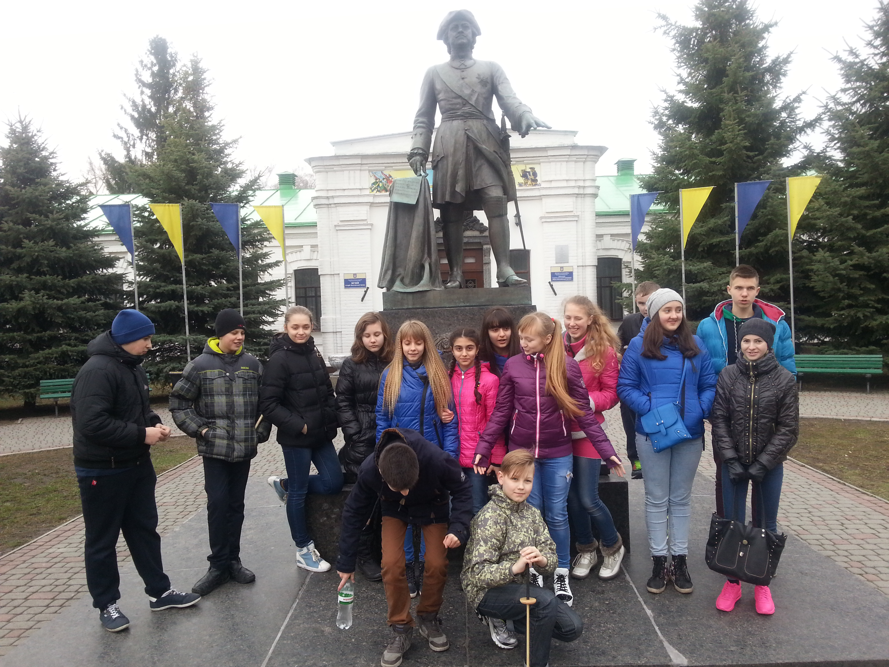
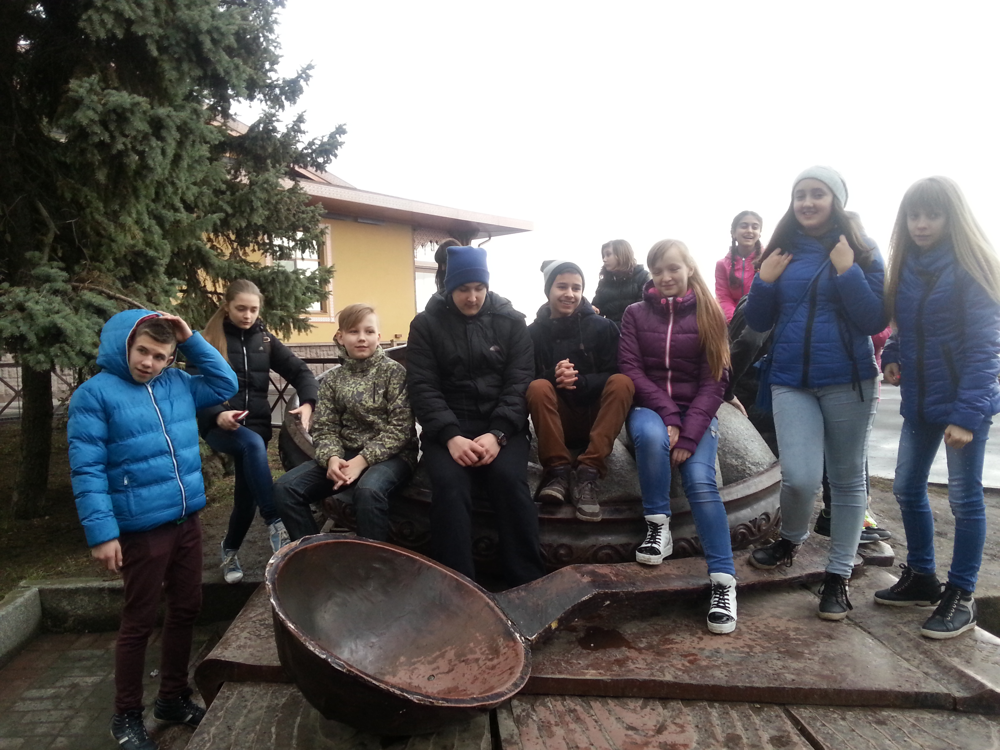

!
7 клас
Полтава
Першою великою екскурсією була подорож до Полтави.
Місто, що оповите історичними легендами,
постатями великих письменників, поетів та музикантів нас чекало.
Під час поїздки ми відвідали музей «Полтавської битви,
домівку Панаса Мирного, будинок Котляревського.
Побачили відому білу арку Полтави та пам’ятник галушці.
Крім всього побаченого нас всю поїздку супроводжував гарний
настрій та гумористичні розповіді. Пригод нам додала гроза,
що спіткала нас у Полтаві, але це тільки посилило наші враження.
Наш висновок - Полтава – місто, в якому потрібно побувати кожному

